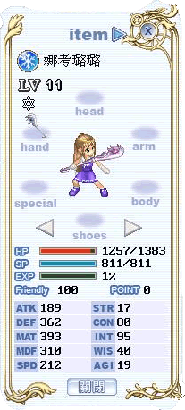

妮丝转生图片及部分解说
上图为转生前
上图为转生时的随机数配点图
很可惜的是，宠物依然没法穿高等装，就跟人物转职一样得练高等才行。
妮丝的新技能
技能名称:冰雪雷消耗SP:135SP说明:凝聚水气成冰，再以落雷重伤敌人范围:单体技能等级:12上限满
至于妮丝转生后的初始能力值，我把STR跟AGI洗到底了，WIS也是...

但是不确定是不是每个人的妮丝都一样也是STR最低17、WIS最低40、AGI最低19...